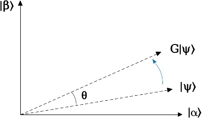
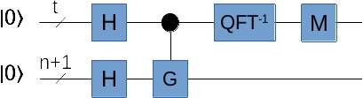

量子搜索问题的扩展：量子计数
Ping Zhou, 2021-10-19
前文《量子搜索》讨论了Grover算法，今天来讨论量子搜索的一个扩展问题——量子计数。
在量子搜索里，我们有一个搜索空间以及一个判断函数f，给定一个状态，f告诉我们它是不是要找的目标状态。Grover算法把f包装成一个G变换，经过多次迭代后测量，可以以任意高的概率得到答案（目标状态）。
量子计数的问题和搜索有点类似，但它关注的是答案（目标状态）的数量：已知在N个项的搜索空间里有若干个（M个）答案，但是答案的数量M未知，如何高效的确定有多少个答案（也就是M的值）？
如果用经典计算机来解决这个问题，就必须遍历整个搜索空间，也就是要查询 \(O(N)\) 次。
如果用量子计算机的话，我们只需要用 \(O(\sqrt N)\) 次查询。相对经典计算机，这是一个多项式级别的加速（polynomial improvement）。之前讨论的Shor算法对因式分解问题有指数级加速，量子计数相比没那么耀眼，但也是一个显著的进步了。
量子计数算法的思路其实很简单：把Grover算法中的G变换看作是相位估计里的U，放到量子相位估计电路里，根据估计出来的相位，就能得到目标状态的数量（M的值）。
在《Grover算法的可视化》一文中，我们知道G变换其实是一个旋转变换，画个图理解一下：

在这个图里， \(|\alpha\rangle\) 表示所有非目标状态的叠加，而 \(|\beta\rangle\) 是所有目标状态的叠加。显然它们互相是正交的，如果用它们作为两个轴张成一个平面，那么Grover算法里的G变换就是把输入向量 \(|\psi\rangle\) 朝着 \(|\beta\rangle\) 轴旋转一个角度 \(\theta\) 。因此G变换可以写成这样的矩阵：
\begin{bmatrix} \cos\theta && -sin\theta \\ \sin\theta && \cos\theta \end{bmatrix}不难证明， \(|\alpha\rangle\) 和 \(|\beta\rangle\) 是G的两个本征向量，并且它们对应的本征值分别是 \(e^{i\theta}\) 和 \(e^{i(2\pi-\theta)}\) 。如果你有兴趣，可以拿纸笔验证一下。:-) 总之，这个G变换可以作为量子相位估计里的U来使用。
把Grover算法里的G变换放到量子相位估计里：

假设搜索空间大小N可以用n位二进制数表示，这里输入用了n+1位，也就是把搜索空间扩大了一倍。为什么要这么做呢？
还记得前文讨论Grover算法有个特殊情况吗？就是目标状态（答案）的数量M超过N的一半，这种情况下Grover算法的性能反而会变差，因为每次旋转的角度太大了，转过头了。解决的办法，就是把搜索空间扩大一倍，确保目标状态的数量少于搜索空间的一半。这里用了同样的思路，因为我们不知道M是多少，干脆先在输入端把N扩大成2N，确保M少于搜索空间的一半。
另一个寄存器需要的量子位数目t，是由我们需要的精度和成功率来决定。例如，假如我们需要相位估计达到m比特的精度，并且成功率大于 \(1-\epsilon\) ，那么t可以这样估算：
\begin{matrix} t = m + \lceil \log (2+\frac{1}{2\epsilon}) \rceil \end{matrix}运行这个电路，在右边测量得到相位估计的结果，也就是 \(\theta\) 的近似值。
而根据Grover算法的原理和G变换的性质，我们知道：
\begin{matrix} \sin \frac{\theta}{2} = \sqrt \frac{M}{2N} \end{matrix}因此：
\begin{matrix} \sin^2 \frac{\theta}{2} = \frac{M}{2N} \\ \Rightarrow M=2N \sin^2 \frac{\theta}{2} \end{matrix}所以，知道了 \(\theta\) 的估值后，我们就可以推算出M的值。
感谢阅读！